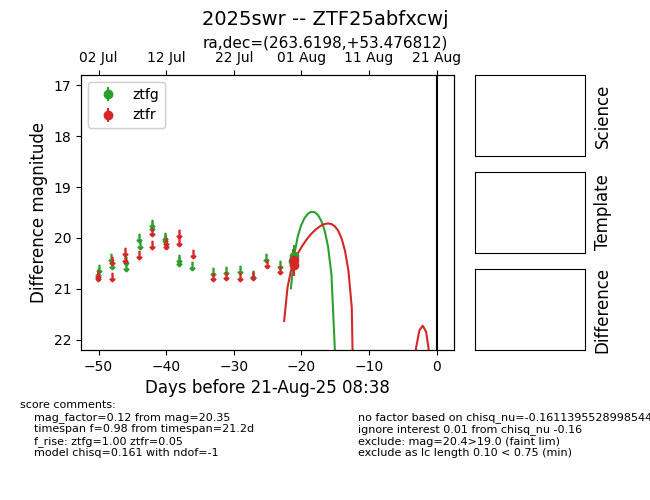

Target 2025swr at 2025-08-21 11:20, see:
FINK: fink-portal.org/ZTF25abfxcwj
Lasair: lasair-ztf.lsst.ac.uk/objects/ZTF25abfxcwj
ALeRCE: alerce.online/object/ZTF25abfxcwj
TNS: wis-tns.org/object/2025swr
YSE: ziggy.ucolick.org/yse/transient_detail/2025swr
alt names
ZTF25abfxcwj (ztf,alerce)
2025swr (tns,yse)
coordinates:
equatorial (ra, dec) = (263.6198,+53.47681)
galactic (l, b) = (81.0104,+32.74999)
photometry
last ztfg=20.35, ztfr=20.54
2 ztfg, 2 ztfr detections
